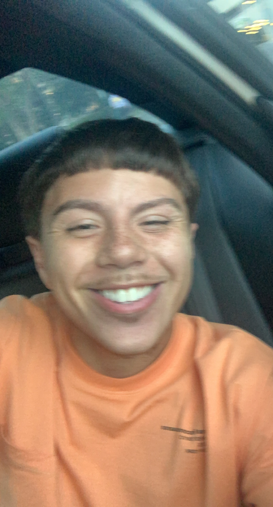
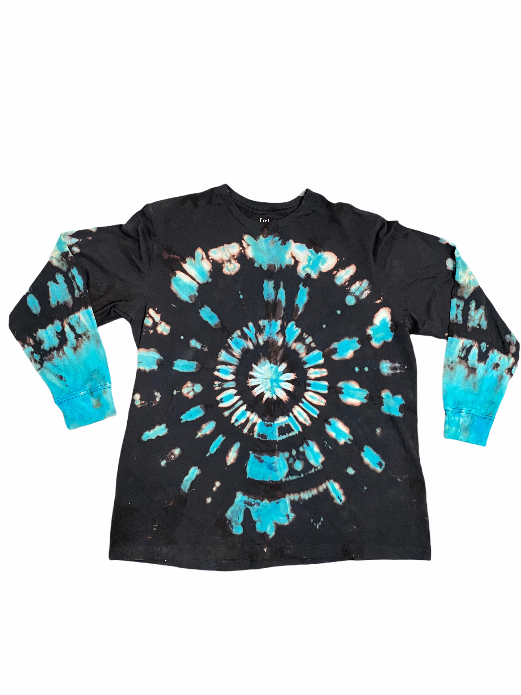
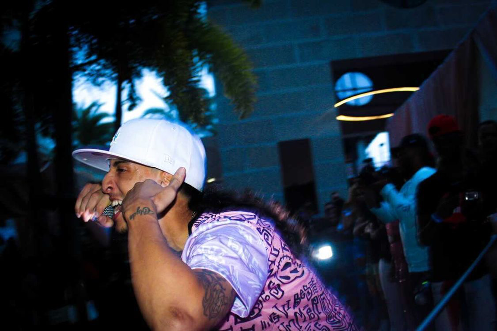

About me
Hello world, my name is Tyler Torres. I'm 21 years old and I come from Jersey City, New Jersey. I currently live in Kissimmee, Florida, where I'm currently taking a coding boot camp at UCF looking to expand my knowledge in web design & coding and mixing it with my other skills!
Contact Information
Want to contact me & learn more about what I do?
Let me Know and i'll be happy to talk!
Kissimme, Fl
34743
P: 407-530-7662
E: ty3torr3s@icloud.com
Contact us!
Tye-dye
Starting with dying shirts in my garage, I created a buisness instagram page dedicated to clothes & accessories i've dyed and sold them to an audience to make money and pay for classes.
Coding

I'm now 21 learning coding from scratch! using all that I learn in this bootcamp, I plan to have more success and more eficiency when it comes to web development for websites about photograph or a shop for clothes! Here's an example of a website I have designed since joining the UCF Coding Bootcamp. Consider this portfolio another example of my coding experience.
Check out my Run Buddy Website!;Photography
Picking up a camera from a young age has introduced me into the world of Photography I got my first camera (Nikon D33000) at the age of 15 and I've been taking pictures since. Here is an examples of one of my shots as I was working for a rapper performing at a restaurant!